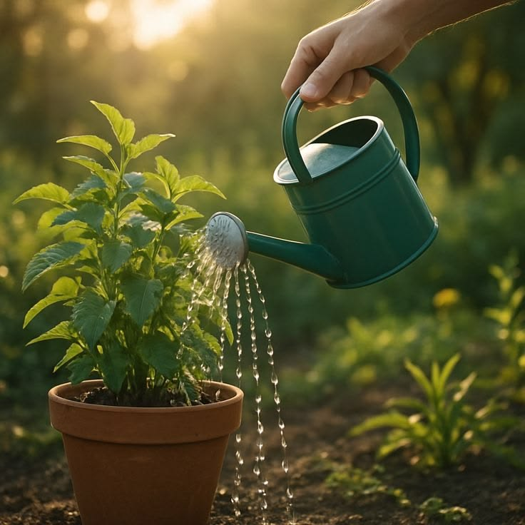

Rega correta
Sobre a água:
Cada planta precisa de uma quantidade diferente de água. Algumas gostam de solo úmido,
outras preferem a terra mais seca.
Dica:
Antes de regar, toque a terra com os dedos. Se ainda estiver úmida, espere mais um pouco.